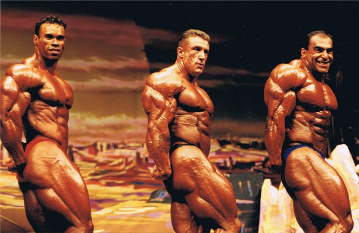

History Of Bodybuilding
The Bronze Era
The Bronze era of bodybuilding, roughly spanning the late 19th century to the 1930s, marked a shift from strength exhibitions to a focus on physique development and physical culture. This era saw the rise of bodybuilding pioneers like Eugen Sandow, who popularized the sport through training, diet, and impressive physiques.
The Silver Era
The Silver Era of bodybuilding, roughly spanning the 1940s to the early 1960s, is celebrated for its emphasis on natural, balanced, and aesthetically pleasing physiques, often considered the peak of classic bodybuilding. Bodybuilders of this era, like Steve Reeves and Reg Park, prioritized health, strength, and symmetry, rather than extreme size or bulk.
The Golden Era
The Golden Era of bodybuilding generally refers to the period from the 1960s through the 1980s. It's characterized by a focus on aesthetics, symmetry, and classic physique development, with athletes like Arnold Schwarzenegger, Frank Zane, and Sergio Oliva becoming iconic figures. This era saw bodybuilding evolve from an obscure activity to a mainstream spectacle, with popular magazines, training principles, and physique contests.
The Mass Monster Era
The mass monster era of bodybuilding, dominant from the late 1980s through the 2000s, was characterized by bodybuilders prioritizing extreme muscle size and mass over aesthetics and symmetry, often achieved through extensive drug use. This era saw bodybuilders grow to unprecedented weights, with some exceeding 300 pounds on stage. Key figures include Dorian Yates, who ushered in the era, and Ronnie Coleman, a multiple-time Mr. Olympia known for his immense size and strength. 
The Modern Era
The modern era of bodybuilding (2010s-present) showcases a dual focus on extreme mass in Open Bodybuilding and aesthetic appeal in divisions like Classic Physique. Driven heavily by social media, which shapes athlete branding and fan engagement, this period also features more scientifically refined training and nutrition, alongside the persistent, often controversial, use of performance-enhancing drugs at the professional level.
History Quiz
Not submitted
Weight lifting
About
Weightlifting, particularly for bodybuilding, involves using resistance exercises to build muscle mass and strength. It's a combination of strength training and a focus on nutrition to achieve a muscular physique. Key aspects include choosing appropriate weight, maintaining proper form, and progressively increasing the challenge as you get stronger.
Muscle Growth and Strength
Bodybuilding primarily aims for maximizing muscle size, or hypertrophy, through weight training, while strength training, though also building muscle, prioritizes increasing the force a muscle can produce; although both disciplines involve lifting weights, their specific rep ranges and exercise selections often differ to achieve their respective goals.

Training Techniques
Free weights like barbells, dumbbells, and kettlebells provide a wide range of exercise options and movements, while weight machines offer guided movements that are beneficial for isolating specific muscles. Regardless of the equipment used, maintaining proper form is crucial to prevent injuries and ensure maximum muscle activation. For continuous muscle growth, progressive overload—gradually increasing weight, reps, or or sets—is essential over time.
Nutrition
About
Bodybuilding nutrition focuses on fueling muscle growth and recovery through a strategic combination of macronutrients: protein, carbohydrates, and fats, along with proper timing and hydration. A well-planned diet, tailored to individual needs and goals, is crucial for achieving success in bodybuilding.
Protein
Essential for muscle repair and growth, bodybuilders typically aim for 1.6-2.2 grams of protein per kilogram of body weight per day, especially during the off-season for muscle gain. Lean protein sources like chicken breast, fish, and whey protein are popular choices.
Carbs
Provide the energy needed for intense workouts and replenish glycogen stores. Complex carbohydrates from sources like whole grains, fruits, and starchy vegetables are preferred. Carbohydrate intake can be adjusted based on individual needs and training phases.
Fats
Important for hormone production and overall health. Healthy fats from sources like nuts, seeds, and olive oil are beneficial. Bodybuilders typically consume 15-20% of their daily calories from fats.
Food Sources
Bodybuilders prioritize specific macronutrient sources: proteins include chicken breast, turkey, fish (salmon, tuna), lean beef, eggs, Greek yogurt, cottage cheese, whey protein, beans, and lentils; carbohydrates are sourced from oatmeal, brown rice, quinoa, sweet potatoes, fruits, and vegetables; and healthy fats come from nuts, seeds, olive oil, and avocado.
Key Nutritional Strategies
For bodybuilders, calorie intake is carefully managed, with a slight surplus (10-20%) often recommended during the off-season for muscle gain, contrasting with a slight deficit (15% or more) used in preparation for competition. Meal frequency is also key, with regular intervals (every 2-3 hours) helping to maintain a positive nitrogen balance essential for muscle protein synthesis. Furthermore, strategic timing of nutrients, such as consuming fast-digesting carbohydrates and protein after workouts, significantly aids in muscle recovery.
Protein Eater Game
Eat as much protein as you can!
Click on the food to eat!